Крайне ли испорчено моё сердце —
если я уже верующий?
Неверный диагноз превращает лечение в суету вокруг симптомов: мы лечим тень болезни, пока сама она продолжает своё гниющее действие. Иеремия 17 — это зеркало, в котором человек видит не то, что хочет, а то, что есть: грех не просто совершается человеком — он вырезается в нём; сердце не просто слабо — оно лукаво и больно́ глубже, чем человек готов признать. Но что это значит для того, кто уже верующий?
Иер. 17 — прежде всего слово к Иуде накануне катастрофы. Только увидев, что именно говорит этот текст в своём историческом контексте, мы можем надёжно проследить, как он звучит в свете Нового Завета — и применить его к верующему с новым сердцем без того, чтобы ослабить диагноз или разрушить обетование.
I. Исторический фон: почему Иеремия говорит так резко
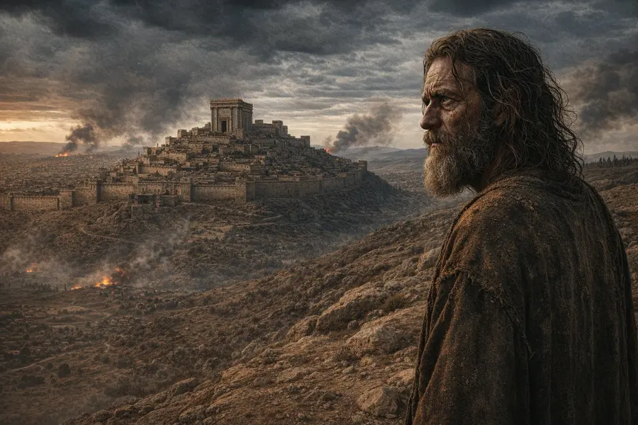
Иеремия служил в последние десятилетия Иудейского царства. После битвы при Кархемише (605 до н.э.) Вавилон стал доминирующей силой; Иудея превратилась в вассала, а затем пережила кризисы 597 и 587/586 годов, завершившиеся разрушением Иерусалима. Пророчество Иеремии — не отвлечённое рассуждение о человеке, а пророческое слово к народу на краю катастрофы — к народу, который сохранил религиозные формы, но внутренне давно ушёл от Бога.
Кальвин, объясняя контекст Иер. 17:5–9, подчёркивает: пророку пришлось снова и снова разбивать ложную уверенность Иуды. Народ искал опоры в людях, союзах и собственных расчётах, а Божьи обетования принимал холодно — как нечто второстепенное. Проблема текста — не просто «плохое поведение», а сердце, уже повернувшееся в сторону плоти и самоспасения. Именно это делает слова Иеремии столь острыми: он обличает не язычников снаружи, а народ завета изнутри.
II. Иеремия 17:1–4 — грех, вырезанный в человеке
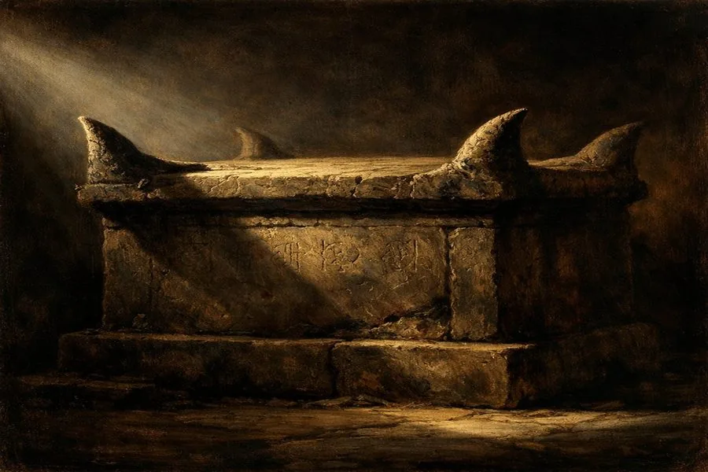
Образ в 17:1 предельно силён. Железный резец и остриё шамир (שָׁמִיר — камень предельной твёрдости, алмаз или кремень) указывают на глубокую, прочную, трудноудаляемую гравировку. Речь идёт не о чернилах, которые можно стереть, — а о борозде, прорезанной в камне.
«Скрижаль сердца» (לוּחַ לִבָּם, «луах либам») означает внутренний центр личности. В еврейском мышлении сердце (лев, לֵב) — это не просто чувства, а весь внутренний человек: мысли, цели, желания, решения. Метафора говорит не о том, что у людей есть дурные поступки, — а о том, что грех уже не на поверхности — он проник в устройство сердца.
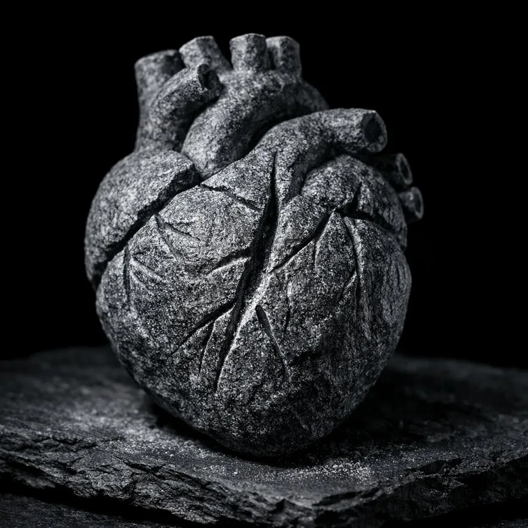
Кальвин, комментируя Иер. 17:9, раскрывает подлинную остроту пророческого удара: народ думал, что сможет перехитрить Бога религиозными видимостями и собственной хитростью. Вот почему пророк тут же переходит к стиху 10 — только Господь, испытующий сердце, производит истинный суд над ним.1Calvin J. Commentary on Jeremiah («Комментарий на книгу Иеремии»). Vol. 2. Edinburgh: Calvin Translation Society, 1851. On Jer. 17:9 Самопознание без Божьего света здесь принципиально невозможно.
Особенно важна фраза «на рогах жертвенников» (קַרְנוֹת מִזְבְּחוֹתֵיכֶם). Одни комментаторы видят здесь прежде всего идольские алтари — публичная, культовая выставленность греха. Другие настаивают на более острой иронии: речь может идти и об алтарях Господа, уже осквернённых идолопоклонством народа. Тогда смысл удваивается: люди несут свой грех именно туда, где должно происходить очищение. Контекст стиха — упоминание сыновей, помнящих жертвенники у зелёных дерев (17:2), — склоняет к тому, что речь идёт прежде всего об идольских местах; однако ирония осквернения законного поклонения присутствует в тексте как второй слой смысла и не исключается.
Здесь один из самых глубоких моментов всей главы: внешняя религия не нейтральна. Она может стать не лекарством, а продолжением болезни. Чарльз Ходж формулирует этот контраст с хирургической точностью: «Эти две вещи различаются по природе настолько, насколько чистое сердце отличается от чистой одежды».27Hodge C. Systematic Theology («Систематическое богословие»). Vol. III. Sanctification. §1 Внешняя реформация жизни — пусть и похвальная — не достигает того, что поражено грехом; она меняет одежду, не меняя человека.
Давид Кларксон, ближайший соратник Джона Оуэна, в проповеди «Soul Idolatry Excludes Men Out of Heaven» (Еф. 5:5) даёт диагноз того, что именно происходит с сердцем, когда осквернение жертвенника становится внутренним. Применительно к возрождённым он различает три уровня: во-первых, «в освящённых существует склонность и предрасположенность к этому идолопоклонству, как и к другим грехам» — растленная природа остаётся «питомником» каждого греха. Во-вторых, «они могут быть виновны в идолопоклоннических поступках и побуждениях» — эта склонность может проявляться в действии. Но, в-третьих, — и это ключевое богословское различение, — «это не господствующее, привычное идолопоклонство… именно господствующее привычное идолопоклонство (не то, которое состоит в некоторых беспорядочных поступках и побуждениях, которым сопротивляются, которые оплакиваются и прощаются) несовместимо с искренностью благодати».36Clarkson D. Soul Idolatry Excludes Men Out of Heaven («Идолопоклонство души лишает людей неба»). In: The Practical Works of David Clarkson. Vol. 2. Edinburgh: James Nichol, 1865. Pp. 299–333 Поэтому осквернённый жертвенник — это не только исторический Израиль; это диагноз того, что может происходить внутри сердца верующего, не замечающего своих идолов.
Томас Бостон, разбирая природу падшего сердца в своей классической схеме «четырёх состояний» человека — невинность, падение, благодать, слава, — говорит прямо: «Испорченное сердце было источником всего».2Boston T. Human Nature in its Fourfold State («Человеческая природа в четырёх состояниях»). Banner of Truth, 2020. P. 144 Эта лаконичность точно передаёт логику текста: все внешние проявления — идолы, притеснение, ложные союзы — лишь симптомы; источник — внутри.
Стих 2 усиливает мысль: «их дети помнят их жертвенники» — идолопоклонство не просто любимо, оно передаётся. Оно становится нормой, привычным ландшафтом души и семьи. Грех обретает социальную память.
Именно поэтому суд в стихах 3–4 не выглядит произвольным. Потеря наследия, рабство, изгнание — всё это вырастает из характера греха, который стал неизгладимым и публичным. Иеремия показывает не суровость Бога ради суровости, а логику самого греха: то, что было врезано в сердце, неизбежно проступает в истории.
III. Иеремия 17:5–8 — два образа доверия
Между описанием греха (17:1–4) и диагнозом сердца (17:9–10) Иеремия ставит ключевой контраст:
Два образа жизни — куст в пустыне и дерево у воды — это не просто поэзия. Это онтология: речь идёт о том, откуда человек черпает жизнь. Вопрос не только «что я сделал?», но «кому я доверяю?», «что является источником моего существования?»
На этом фоне стихи 9–10 звучат как диагностическое объяснение: почему человек снова и снова выбирает путь, ведущий в пустыню? Барнс формулирует этот структурный вопрос прямо: если путь благословения так ясно обозначен в стихах 7–8, почему человек так упорно делает плоть своей опорой? И отвечает: потому что сердце неспособно видеть прямо — оно полно изощрённой хитрости (shrewd guile) и постоянно норовит перехитрить самого себя.3Barnes A. Notes on the Bible («Заметки на Библию»). On Jer. 17:9 Ответ — в самом сердце.
IV. Иеремия 17:9–10 — сердце как источник самообмана
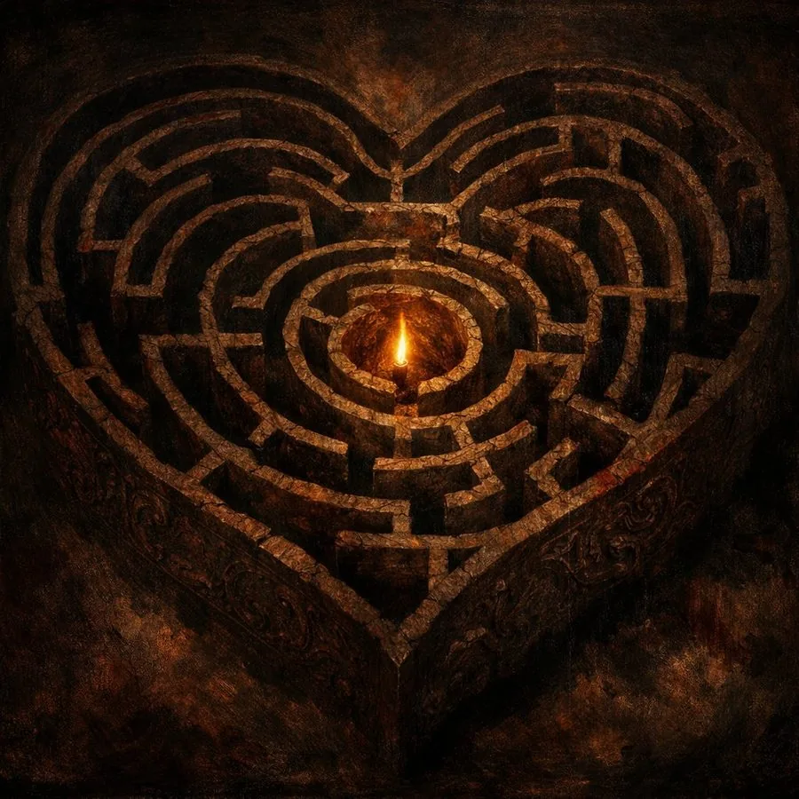
Это центральный богословский момент всей главы. Еврейское слово ʿāqōb (עָקֹב) в 17:9 несёт значение «кривой», «обманчивый», «коварный» — от того же корня, что и имя Иаков (Яаков, יַעֲקֹב): тот, кто хватает за пятку, обходит сзади, ускользает. Джеймисон, Фоссет и Браун замечают здесь важную иронию: обличая обманчивость сердца иудеев, Иеремия использует именно это слово намеренно — народ унаследовал от праотца не его веру, а его хитрость. Но с обратным знаком: Иаков хитрил ради благословения Господа, они же хитростью заменяют Господа доверием к плоти, думая при этом, что Бог этого не заметит.4Jamieson R., Fausset A.R., Brown D. Commentary Critical and Explanatory on the Whole Bible («Критический и толковательный комментарий на всю Библию»). On Jer. 17:9 Слово ʾānūš (אָנֻשׁ) в том же стихе означает «тяжело больной», «неисцелимый» — человек, которого уже не вылечит никакая человеческая медицина. Кейль и Делич, классики консервативной библеистики, фиксируют: ʾānûš — «опасно больное, неисцелимое» — и заключают: «Поэтому человек не должен доверять внушениям и иллюзиям своего сердца».5Keil C.F., Delitzsch F. Biblical Commentary on the Old Testament: Jeremiah («Библейский комментарий на Ветхий Завет: Иеремия»). T&T Clark, 1866. On Jer. 17:9 Привычный перевод «крайне испорчено» точен по направлению, но не исчерпывает образ: сердце болезненно и обманчиво одновременно.
Кальвин тонко замечает: пророк здесь не просто сообщает абстрактную истину о природе человека. Он обличает народ, который думает, будто сумеет перехитрить Бога религиозными видимостями. Смысл удара: вы можете обманывать себя — но не Бога.
Именно поэтому стих 10 так же важен, как и стих 9. Бог «испытывает сердце и испытывает внутренности» (בֹּחֵן לֵב וּבֹחֵן כְּלָיֹות). Человек может быть обманут собой — Господь нет. Истинное самопознание потому не начинается с автономного самоанализа; оно начинается с того, что человек встаёт под Божий свет. Именно об этом Псалом 138 (139) в своей финальной молитве: «Испытай меня, Боже, и узнай сердце моё… и направь меня на путь вечный» (Пс. 138:23–24) — это прямой ответ Писания на диагноз Иер. 17:9–10.
Сперджен описывает механизм этого самообмана без прикрас: «Наше обманчивое сердце обнаруживает почти сатанинскую хитрость в самообмане — оно охотно заставляет худшее казаться лучшим доводом и излагает ложь так, что она принимает облик истины».6Spurgeon C.H. Sermon 1241: Honest Dealing with God («Честные отношения с Богом»). Metropolitan Tabernacle Pulpit, Vol. 21. London: Passmore & Alabaster, 1875 Это не риторическое преувеличение — это верная характеристика сердца, о котором говорит Иеремия: оно не просто грешит, оно готовит себе обоснование для падения. Самый опасный момент — не когда сердце согрешило, а когда оно уже нашло для этого богословие.
И вот в этой точке Кальвин вводит формулу, ставшую классикой реформатской антропологии. В разделе об идолопоклонстве «Institutes of the Christian Religion» («Наставление в христианской вере») (I.11.8) он пишет: «Отсюда можно заключить, что человеческий ум есть, так сказать, непрестанная кузница идолов» (perpetuam, ut ita loquar, esse idolorum fabricam). Непосредственный контекст — запрет рукотворных образов, но Кальвин здесь формулирует общий антропологический закон: проблема человека не только в том, что он нарушает Божий закон, но в том, что он постоянно производит ложные центры доверия, любви и надежды. Идолы сначала выковываются внутри, а уже потом принимают внешний облик.
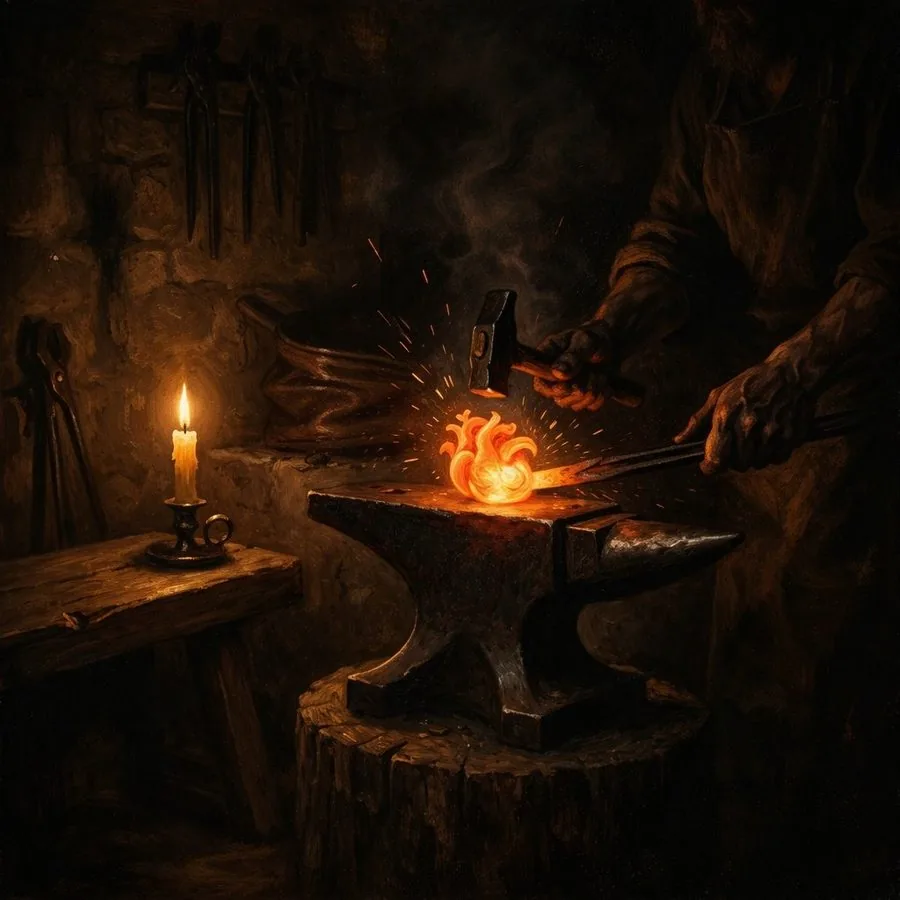
Таким образом, Иер. 17:1–4 и Иер. 17:9–10 описывают одну реальность в двух регистрах. В первом случае грех — это надпись, уже выгравированная в человеке и его поклонении. Во втором — сердце как источник самообмана, из которого и растёт эта жизнь. Грех у Иеремии — это одновременно и вина, и внутренняя сила; и поступок, и привязанность; и нравственное зло, и ложная религия. Эти два измерения нельзя разрывать. Внешняя реформа без сердечного обновления не решает проблему — она лишь переносит гравюру на другую поверхность.
Джон Флавел, размышляя над Притч. 4:23 («Больше всего хранимого храни сердце твоё, потому что из него источники жизни»), формулирует: «Сердце человека — его худшая часть до возрождения и лучшая после: оно есть средоточие принципов и источник действий».11Flavel J. Keeping the Heart («Хранение сердца»). Ch. 1. Monergism Books, 2021. P. 3 Эта полярность важна: Флавел не упрощает ни одну из сторон. До возрождения сердце — источник всего зла; после — источник всего подлинно доброго. Но в обоих случаях именно сердце определяет траекторию.
V. Относится ли Иеремия 17:9 к верующему?
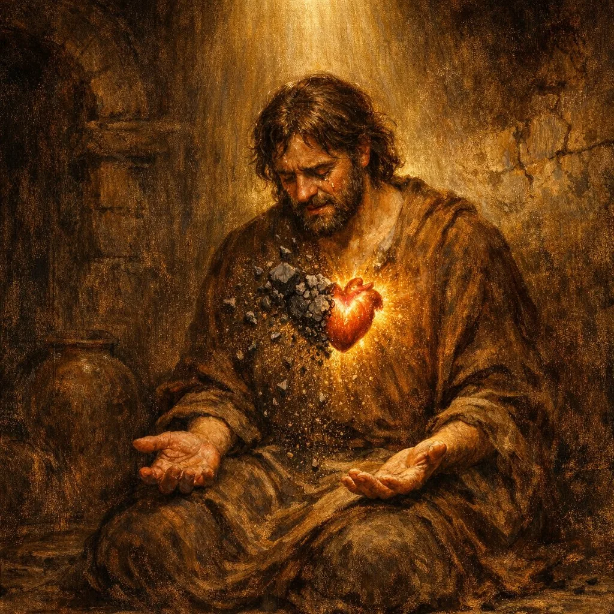
Здесь требуется максимальная аккуратность — и богословская, и пастырская. Первичный смысл Иер. 17:9 — описание падшего, отвратившегося от Господа сердца; в контексте главы это сердце, которое предпочитает доверие плоти доверию Богу. В этом смысле стих прямо описывает человека вне обновляющей благодати. Гейдельбергский катехизис формулирует тот же диагноз: падшая природа «совершенно неспособна к какому-либо добру и склонна ко всякому злу».12Гейдельбергский катехизис. Вопрос 8 Это не приговор для верующего — это точка отсчёта, от которой начинается исцеление благодатью.
Но здесь нельзя поставить точку. Новый завет обещает не просто внешнее прощение, а внутреннее переписывание:
- «Вложу закон Мой во внутренность их и на сердцах их напишу его» (Иер. 31:33; цит. в Евр. 8:10)
- «Дам им одно сердце и один путь» (Иер. 32:39)
- «Дам вам сердце новое и дух новый вложу в вас; возьму из плоти вашей сердце каменное и дам вам сердце плотяное» (Иез. 36:26)
Важно отметить: в своём первоначальном контексте Иез. 36 говорит о национальном восстановлении Израиля. Новый завет применяет это обетование к индивидуальному и духовному уровню — именно так Евр. 8 и Ин. 3 читают заветные пророчества Иеремии и Иезекииля как исполнившиеся во Христе.
Послание к Евреям прямо цитирует Иер. 31:31–34 как уже исполнившееся во Христе (Евр. 8:8–12; 10:16–17): Новый завет — не будущее обетование, а наступившая реальность.
Поэтому о христианине нельзя говорить: «его сердце совершенно такое же, как у невозрождённого». В новом рождении человек получает реальную новизну: прощение, Духа Святого и новое внутреннее начало.
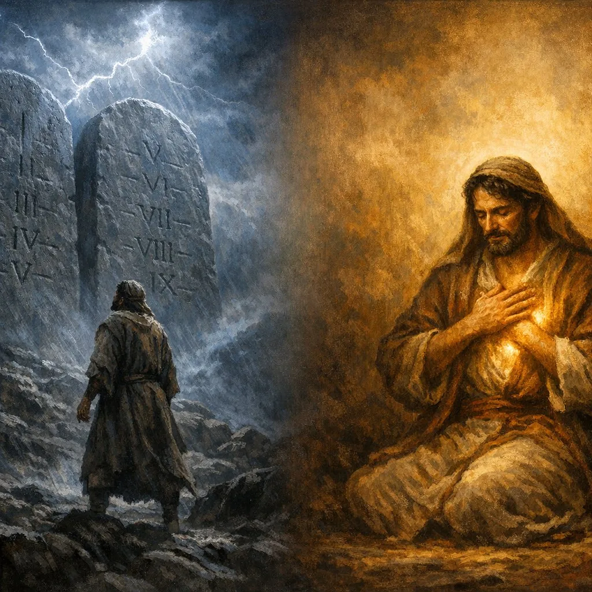
Пайпер развёртывает это различение с необходимой тонкостью: «Неправильно применять этот текст — Иер. 17:9 о том, что сердце лукаво более всего — к возрождённому сердцу без оговорок» (Is the Believer's Heart Desperately Sick? («Неужели сердце верующего „крайне испорчено"?»). Desiring God, 2014).8Piper J. Is the Believer's Heart Desperately Sick? («Неужели сердце верующего «крайне испорчено»?»). Desiring God, 2014. desiringgod.org И далее: «Мы не должны говорить о наших новых сердцах, в которых обитает Дух: "Оно обманчиво более всего и крайне испорчено". Мы должны говорить: "Без Христа я был бы обманут. Без Христа я был бы развращён"».9Там же: Piper J. Is the Believer's Heart Desperately Sick? («Неужели сердце верующего „крайне испорчено"?»). Desiring God, 2014
И всё же — и это вторая половина той же пайперовской мысли — новое сердце не означает исчезновения остаточного греха. «Мы можем сказать, что Иер. 17:9 — истина о человеческом сердце, о каждом из них. Но там, где Бог применяет купленное кровью приобретение Нового завета, — там новое творение».10Piper J. Is the Christian's Heart Deceitfully Wicked? («Обманчиво ли сердце христианина?»). Desiring God, 2014 Новое творение — реальность. Но оно ещё не завершено.
Именно здесь Кальвин даёт формулировку, которую стоит привести точно, с латинским оригиналом из «Наставления» (2.3.11): «Quamvis regenerati Spiritu Dei non sint immunes ab hac corruptione, tamen non regnat in eis peccatum, sed mortificatur quotidie» — «Хотя возрождённые Духом Божьим не свободны от этой порчи, однако грех не господствует в них, но ежедневно умерщвляется».7Calvin J. Institutes of the Christian Religion («Наставление в христианской вере»). 2.3.11 Различение «господствует / присутствует» — ключевое. Грех в верующем не исчез, но потерял трон.
Лютер выразил ту же реальность своей знаменитой формулой: simul iustus et peccator — «одновременно праведник и грешник». Каждый день своей жизни верующий зависит от благодати Безгрешного, растёт в лучшем случае дюйм за дюймом и должен оставаться подозрительным к собственным идолотворческим порывам сердца.
Иер. 17:9 не является последним словом о личности верующего, но остаётся важным словом предупреждения для верующего. Стих не должен определять новую идентичность христианина — но должен разрушать его самоуверенность.
Разговор о верующем и остаточном грехе неизбежно выводит к Рим. 7 — одному из самых дискутируемых мест во всём корпусе Павловых посланий. Кто произносит там слова «не то делаю, что хочу, а что ненавижу — то делаю» (Рим. 7:15)? Реформатская традиция — Лютер, Кальвин, Оуэн, Ходж, Беркхоф, Мюррей, МакАртур, Пайпер — читает эти слова как описание опыта верующего, ведущего реальную войну с остаточным грехом. Ходж аргументирует эту позицию прямо: «Нет ни одного верующего, даже самого святого, который не был бы вынужден говорить о себе так, как Павел здесь говорит».28Hodge C. Systematic Theology («Систематическое богословие»). Vol. III. Sanctification. §2: «Paul details his own Experience in Romans vii. 7-25» МакАртур в той же точке заключает: «Эта борьба здесь — явно борьба возрождённого человека… Это не может быть неискупленный человек».29MacArthur J. The Believer and Indwelling Sin («Верующий и живущий внутри грех»), Part 2. GTY.org, sermon 45-53, 1983 Ряд других богословов — Шрайнер, Н. Т. Райт, Мо, а из русскоязычных — Прокопенко — видит здесь невозрождённого; причём Прокопенко уточняет: не просто любого неверующего, а религиозного, просвещённого законом человека — искренне борющегося, но ещё без Христа и без силы победы. Ллойд-Джонс предложил третью позицию: человек на пороге, ещё не вошедший в реальность Рим. 8. При любом прочтении выход один: «нет ныне никакого осуждения тем, которые во Христе Иисусе» (Рим. 8:1). Подробный разбор этой дискуссии — предмет следующей статьи о Рим. 7–8.
VI. Что изменилось у верующего — и что ещё не исчезло
У верующего изменилось главное: направление сердца. Дух Святой обращает его к Богу, делает возможными веру, покаяние, любовь к святости и ненависть ко греху. Новое сердце — это не метафора. Это заветная реальность.
Но окончательно не исчезло следующее: привычка к самооправданию, слепые зоны, идолотворческие порывы, похоти плоти, способность переносить центр надежды с Бога на себя, людей, комфорт или духовные достижения. Поэтому предупреждения Писания о бодрствовании, испытании себя и умерщвлении дел плоти остаются актуальны — не как отрицание нового сердца, а как форма его освящения.
Разница между неверующим и верующим здесь хорошо передаётся через кальвинское «господствует / умерщвляется»: грех в неверующем сердце господствует — он определяет направление, правит волей, ослепляет разум; в сердце верующего грех присутствует, но не господствует — он встречает сопротивление нового начала, Духа, Слова и молитвы. Разница не в безгрешности, а в престоле.
Оуэн формулирует то же самое в трактате Of Indwelling Sin in Believers («О живущем в верующих грехе»): «Наиболее зрелые верующие, несомненно освобождённые от осуждающей силы греха, тем не менее должны ежедневно трудиться, чтобы освобождаться всё более и более от его оскверняющей силы в своей жизни».13Owen J. Of the Mortification of Sin in Believers («Об умерщвлении греха в верующих»). Ch. 2. Works, Vol. 6. Banner of Truth, 1965 Ключевое слово — «оскверняющая сила». Но за этим кратким различением стоит более точная аналитика, которую Оуэн развёртывает в Of Indwelling Sin.
Он разграничивает два вида господства греха. Первое — моральное авторитетное господство: законное право греха царствовать над человеком как его господину. Это господство у верующего сломлено полностью. Второе — реальное действенное господство: фактическая сила греха действовать в человеке изнутри — соблазнять, оскверняет дела, ранить совесть, ослаблять общение с Богом. Эта сила остаётся, хотя ослаблена и встречает сопротивление. «Хотя грех не имеет над верующими полного, как бы законного господства, — говорит Оуэн, — всё же он будет иметь господство в отношении некоторых вещей в них».37Owen J. Of Indwelling Sin in Believers («О грехе, живущем в верующих»). Ch. 1–2. Works, Vol. 6. Banner of Truth, 1965 Это не противоречие Рим. 6 — Павел говорит об общем направлении жизни верующего; Оуэн уточняет: в отдельных вещах, в конкретных периодах грех ещё способен временно преобладать. Жизнь верующего в целом характеризуется как служение Богу; в отдельных случаях — как война, в которой он иногда терпит поражение.
Это различение — не повод для малодушия, а призыв к трезвости. Человек, у которого не было периодов, когда грех «захватывал» его больше обычного, скорее всего плохо знает самого себя. В этом и объяснение того, почему Вестминстерское исповедание говорит об этих реалиях без смягчений: «остаточная порча может на время сильно преобладать», и верующие могут «впадать в тяжкие грехи и на время продолжать в них» — это не отменяет их принадлежности Христу, но показывает, насколько серьёзен враг внутри.38Вестминстерское исповедание веры. Гл. 17, §3; Гл. 13, §2
Именно это делает вопрос об источнике внутреннего «осуждения» практически важным. Верующий, согрешивший и переживающий тяжесть вины, нередко смешивает несколько совершенно разных голосов — и даёт на все один и тот же ответ, а нужно — разные.
Первый голос — обличение Святого Духа (Ин. 16:8; 2 Кор. 7:10). Оно конкретно: указывает на определённый грех; ведёт ко Христу, а не к отчаянию; сопровождается надеждой и желанием исправиться. Это не враг, а признак живой совести. Болезненное внутреннее потрясение после греха — не возврат под приговор, а отцовское действие Бога (Евр. 12:5–11), ведущее к покаянию.
Второй голос — обвинение сатаны-клеветника (Откр. 12:10; Зах. 3:1). Писание прямо называет его «обвинителем братьев наших», который «обвиняет их перед Богом нашим день и ночь». Обвинения дьявола опасны именно тем, что несут в себе много правды: мы действительно грешны, действительно виновны. Но его цель — ложный вывод: «раз ты пал — значит ты не Христов». Поэтому ответ ему — не самооправдание, а указание на кровь Христа: «Кто будет обвинять избранных Божьих? Бог оправдывает их» (Рим. 8:33–34). Обличение Духа ведёт к покаянию и Христу; обвинение сатаны ведёт к отчаянию и изоляции — это самый надёжный признак для различения.
Третий голос — раненая совесть (Евр. 10:22; Рим. 2:15). Оуэн делает тонкое различение, которое здесь особенно важно: прощение во Христе убирает не болезненность совести, а только её право выносить приговор личности. Совесть верующего продолжает осуждать конкретный грех как зло — и должна это делать. Но она уже не вправе, в свете Евангелия, заключать: «ты отвергнут Богом». Поэтому острая совесть — не свидетельство потери спасения; это свидетельство того, что новое сердце живо.
Четвёртый голос — богословское недоверие Богу (1 Ин. 5:10; Евр. 3:12). Это не просто раненая совесть и не сатанинская атака — это грех неверия, когда человек отказывается принять свидетельство Христа о принятии, убеждая себя, что Рим. 8:1 применимо к другим, но не к нему. Ответ здесь — не самоанализ, а взгляд веры на обещания Евангелия.
Различение этих четырёх голосов — не теоретический вопрос; это практический центр духовного бодрствования. Смешивая их, человек рискует либо притупить совесть там, где нужно покаяние, либо впасть в отчаяние там, где нужно указание на кровь Христа.
Здесь необходимо чуть подробнее остановиться на самих понятиях — потому что именно их смешение порождает путаницу. Что такое плоть (σάρξ)? В Новом завете «плоть» — это не просто тело и не чувственность как таковая. Луис Беркхоф определяет: «Плоть в этическом смысле обозначает всего человека в той мере, в какой он управляется греховным началом, обитающим в нём и проявляющимся во всех его способностях».15Berkhof L. Systematic Theology («Систематическое богословие»). Eerdmans, 1939. P. 427 Джон Мюррей в комментарии на Рим. 7:18 уточняет применительно к верующему: «"Плоть" у Павла, когда применяется к верующим, обозначает не физическое тело, но остаточную порчу ветхой природы. Это греховное начало, которое продолжает обитать в верующем и должно умерщвляться Духом».16Murray J. The Epistle to the Romans («Послание к Римлянам»). NICNT, Vol. 1. Eerdmans, 1959. P. 268 (on Rom. 7:18) То есть плоть — это не «низшая» часть человека против «высшей», а весь человек, ориентированный на себя и противостоящий Богу. Не случайно Иеремия говорит: «проклят человек, который… плоть делает своею опорою» (17:5) — речь идёт не о теле, а о направлении воли и доверия.
Есть ли плоть у неверующего? Да — и только она. До возрождения человек есть целиком плоть в этом смысле: его воля, разум, чувства и поклонение ориентированы от Бога. Гейдельбергский катехизис говорит прямо: падший человек «совершенно неспособен к какому-либо добру и склонён ко всякому злу» (В. 8). Это не означает, что неверующий не способен ни на что достойное в человеческих отношениях — но в отношении Бога, в движении к Нему, его сердце мертво (Еф. 2:1). Иер. 17:9 («сердце обманчиво более всего») описывает именно это состояние как исходное.
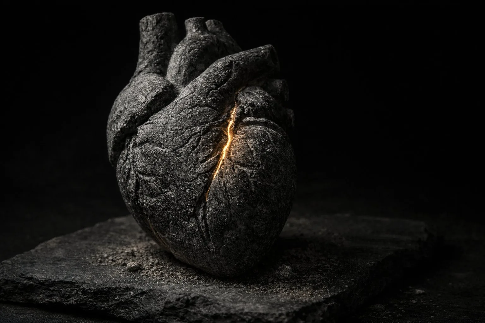
Что такое новая природа — и когда она появляется? Новая природа — это не «улучшенная версия» старой и не отдельный «отсек» внутри человека. Это новое начало, вложенное Духом Святым при возрождении: новое сердце (Иез. 36:26), написанный внутри закон (Иер. 31:33), новая склонность к Богу, которой прежде не было. Гейдельбергский катехизис описывает это как «оживание нового человека» — «сердечная радость о Боге во Христе и желание жить по воле Его» (В. 90). Это не постепенный процесс воспитания, а мгновенное действие Бога: регенерация, которая затем раскрывается в прогрессивном освящении.
Как они соотносятся в верующем? Это не две части человека и не два равноправных «слоя». Оуэн указывает на то, что новая природа дана именно для того, «чтобы у нас был внутренний принцип для противодействия греху и похоти. "Плоть желает против Духа" — ну и что? "Дух также желает против плоти" (Гал. 5:17). В Духе, или духовной новой природе, есть склонность действовать против плоти, так же как в плоти есть склонность действовать против Духа».17Owen J. Of the Mortification of Sin in Believers («Об умерщвлении греха в верующих»). Ch. 2. Works, Vol. 6. Banner of Truth, 1965 Это не два равных противника: новое сердце — определяющая реальность идентичности верующего во Христе. Плоть продолжает бороться — но она уже не на троне.
Разница между неверующим и верующим поэтому не в отсутствии / наличии греха, а в господстве: у неверующего плоть правит и определяет всё направление. У верующего плоть присутствует и борется — но встречает сопротивление нового начала, Духа, Слова и молитвы. Мюррей формулирует это с необходимой строгостью: «Освящение — это не искоренение греха, а постепенное его подчинение. Верующий освобождён от господства греха, но присутствие греха остаётся, и это присутствие порождает тот конфликт, который переживает каждый дитя Божье».18Murray J. Redemption Accomplished and Applied («Искупление — совершённое и применённое»). Eerdmans, 1955. P. 246 Вестминстерское исповедание выражает то же самое: «Освящение… во всём человеке, однако несовершенно в этой жизни: в каждой части ещё остаются некоторые остатки порчи, откуда возникает непрестанная и непримиримая война».19Вестминстерское исповедание. Гл. 13, §2: «О освящении»
Джоэл Бики выражает это в образе неискоренённого кустарника: «Внутренний грех подобен тому кустарнику. Он требует постоянного искоренения. Наши сердца нуждаются в непрестанном умерщвлении».14Beeke J.R. О внутреннем грехе (2025) Умерщвление — не разовая операция. Это образ жизни, который становится возможным именно потому, что новая жизнь уже дана.
Беркхоф суммирует эту реальность в широком библейском контексте: «Согласно Писанию, в жизни детей Божьих существует постоянная война между плотью и Духом, и даже лучшие из них всё ещё стремятся к совершенству» — и указывает на Гал. 5:16–24 как на описание этой борьбы, «характеризующей всех детей Божьих», а на Флп. 3:10–14 — как на свидетельство самого Павла в конце его служения о том, что он «ещё не достиг совершенства, но устремляется к цели».30Berkhof L. Systematic Theology. Sanctification, §H.2.c.(2). Eerdmans, 1939. Англ. текст онлайн: Christian Classics Ethereal Library (CCEL, ccel.org) — авторитетная богословская библиотека при Calvin University. Рус. пер.: Беркхоф Л. Систематическое богословие. СПб.: Библия для всех, 2000
Ходж даёт структурную формулу того, в чём состоит сама эта борьба — и чем она должна завершиться: «Освящение состоит в двух вещах: во-первых, во всё большем устранении принципов зла, всё ещё заражающих нашу природу, и уничтожении их силы; и, во-вторых, в росте духовного начала жизни до тех пор, пока оно не возьмёт под контроль мысли, чувства и поступки и не приведёт душу в соответствие образу Христа».31Hodge C. Systematic Theology («Систематическое богословие»). Vol. III. Sanctification. §2: «Putting off the Old, and putting on the New Man» При этом Ходж подчёркивает: в каждом христианине «есть смесь добра и зла; что первоначальное растление природы не полностью удаляется возрождением… его самолюбие, гордость, недовольство, мирские привязанности всё ещё цепляются за него и мучают его».32Hodge C. Systematic Theology («Систематическое богословие»). Vol. III. Sanctification. §2: «What Romans vii. 7-25 teaches» Это не риторическое преувеличение — это богословская карта того, что конкретно остаётся в сердце возрождённого.
VII. Как грех становится структурой
У греха есть способность превращаться из акта в структуру. Всякий поступок оставляет след в самом делающем; зло облегчает собственное повторение, ослабляет сопротивление и тянет за собой новые формы зла. Это близко к библейской логике ожесточения (קָשָׁה לֵב, «каша лев» — «ожесточить сердце»): человек сначала делает грех — а потом грех начинает «делать» человека.
Оуэн разбирает этот процесс беспощадно: «Грех всегда действует, всегда замышляет, всегда соблазняет и искушает. Кто может сказать, что когда-либо имел дело с Богом или для Бога, и при этом живущий в нём грех не приложил руку к порче того, что он делал?» (Of the Mortification of Sin in Believers («Об умерщвлении греха в верующих»), ch. 2).
Особенно важен образ о «тихих водах»: «Когда грех оставляет нас в покое, мы, может быть, готовы оставить грех в покое; но грех никогда не бывает менее тих, чем когда кажется наиболее тихим, и его воды большей частью глубоки там, где они неподвижны» (там же). Видимое затишье духовной жизни — один из самых опасных периодов. Именно тогда кальвинская «кузница идолов» работает наиболее незаметно.
Пайпер показывает механизм этой тихой работы: «Грех обманчив. Он говорит ложь, и эта ложь ожесточает сердце. Если мы не противостоим лжи греха истиной, наши сердца ожесточатся».22Piper J. How Do I Reclaim My Heart? («Как мне вернуть себе сердце?»). Desiring God, 2014 Ожесточение — это не результат одного большого падения; это накопленный итог маленьких согласий с ложью.
Вот почему внешне «приличные» грехи особенно опасны. Не только блуд или жадность, но и религиозная правота, самооправдание, любовь к контролю, обида, культ одобрения, упование на собственный разум — всё это может стать тем самым письмом, которое не писал Бог, но которое уже проступает в сердце и на «жертвенниках» жизни.
VIII. Как нельзя применять эти тексты к христианину
Первая ошибка — читать Иер. 17 так, будто Новый завет ничего реально не изменил. Тогда человек приходит либо к духовному цинизму («во мне ничего не обновилось»), либо к парализующему саморазрушению («любое добро подозрительно», «сердцу нельзя верить ни в каком смысле»). Это богословски ложно, потому что противоречит обетованиям о новом сердце — и опровергается прямым словом Евр. 8.
Вторая ошибка — противоположная: считать, что новое сердце означает автоматическую чистоту всякого внутреннего импульса. Иеремия 17 разбивает культ искренности. Не всё, что человек глубоко чувствует, истинно. Не всё, что внутренне кажется «моим подлинным порывом», свято. Именно поэтому верующему нужны Писание, молитва, община и постоянное испытание сердца под Божьим светом.
Пайпер раскрывает механизм, по которому сердце обманывает даже тогда, когда мы убеждены в своей чистоте: «Сердце обманчиво в том смысле, что оно удерживает хорошие мотивы от хороших поступков и предлагает хорошие мотивы для плохих поступков».23Piper J. Is the Believer's Heart Desperately Sick? («Неужели сердце верующего „крайне испорчено"?»). Desiring God, 2014 Проблема не только в том, что мы делаем плохие вещи — проблема в том, что мы умеем рационализировать их, снабжая их хорошими мотивами.
Мюррей резюмирует обе ошибки одной формулой: «Отрицать реальность остаточного греха в верующем — значит впадать в перфекционизм; отрицать реальность новой жизни — значит скатываться в антиномианство. Божья истина удерживает оба аспекта в напряжении: верующий мёртв для господства греха, но должен почитать себя мёртвым и бороться с его присутствием».25Murray J. Principles of Conduct («Принципы христианского поведения»). Eerdmans, 1957. P. 214 Это и есть богословские берега, между которыми держится пастырское применение Иер. 17.
Третья ошибка — менее очевидная, но не менее опасная: использовать Рим. 8:1 («нет никакого осуждения») как анестезию совести, которая притупляет её обличительную работу. Оуэн называл это одним из серьёзных внутренних движений к греху: когда истина о прощении начинает применяться не для успокоения раненой совести после покаяния, а для её замолчания вместо покаяния. Это не вера — это злоупотребление благодатью, которое Павел предвидел в Рим. 6:1. Евангелие не затем снимает осуждение, чтобы убрать саму чувствительность к греху; оно снимает приговор, чтобы освободить место для живого покаяния, которое ни под каким приговором не нуждается в самозащите.
Герман Бавинк даёт формулу, которая помогает удержать этот баланс на уровне идентичности: в возрождённом человеке «Я» обновлено и теперь стоит на стороне Бога — грех стал чужеродной силой, которой новое «Я» противостоит, а не частью того, кем верующий является во Христе (Reformed Dogmatics, vol. 4). Отсюда и богословская разрушительность первой ошибки: она заставляет человека отождествлять себя с грехом, тогда как Писание отождествляет его с новым творением.
IX. Практика: как жить с этим диагнозом
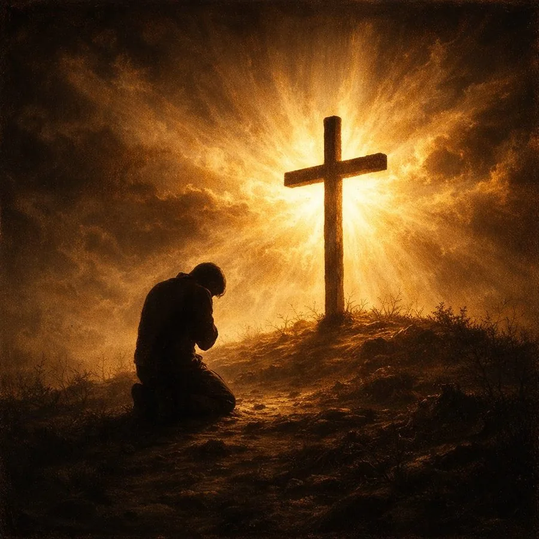
1. Учиться исповедовать не только поступки, но и корни
Иеремия не даёт свести проблему к поверхностным актам — он ведёт к сердцу, к доверию плоти, к идолам, к осквернённому поклонению. Поэтому вопрос верующего должен звучать не только: «Что я сделал?» — но и: «Чему я доверял? Что я защищал? Какой "алтарь" стоял за моим поступком?»
Пол Вошер выражает это с пастырской прямотой: «Для человека, увидевшего испорченность своего сердца и стыд своих дел перед святым Богом, Евангелие — нечто потрясающее» (Washer P.D.). Глубина диагноза открывает глубину благодати — но только тогда, когда человек принимает диагноз всерьёз. Важно: цель этого видения — не остаться в скорби о себе, а прийти ко Христу. Диагноз — дверь, а не комната.
2. Практика испытания сердца
Истинное самопознание требует того, чтобы совесть не только «слушалась», но и вызывалась на суд. Томас Мэнтон говорит об этом резко: «Когда совесть молчит — подозревай её. Мёртвое море хуже бушующего: это не покой, а смерть». И далее: «Если совесть не говорит с тобой, ты должен говорить с совестью». Причём первый отклик совести заслуживает особого доверия: «первый голос совести подлинный и нелицемерный; обманчивость — не в самом свидетельстве совести, а во множестве уловок, которыми мы его заглушаем».21Manton T. Complete Works («Полное собрание сочинений»). Vol. IV. Commentary on James. Pp. 156–158
Отсюда вытекает практическое правило: не спеши с миром, который ты сам себе объявил. Спроул напоминает, зачем здесь нужна трезвость: «Полная испорченность не означает, что человек настолько плох, насколько это возможно; она означает, что грех затронул каждую часть его существа».24Sproul R.C. Everyone's a Theologian («Каждый — богослов»). Reformation Trust, 2014. P. 168 — включая совесть, включая самооценку, включая религиозные переживания. Поэтому никакая внутренняя уверенность не является последним аргументом; последний аргумент — Слово Божье и его суд над нашими мотивами.
3. Борьба с грехом должна быть не декоративной, а смертельной
Оуэн формулирует принцип, ставший классикой реформатского духовного руководства: «Умерщвляешь ли ты грех? Делаешь ли ты это своим ежедневным трудом? Будь всегда за этим, пока живёшь; не прекращай этой работы ни на один день; убивай грех — или он будет убивать тебя» (Mortification, ch. 2).
И далее — образ змея, важный именно для тех, кто начал борьбу, но не довёл её: «Пусть никто не думает убить грех немногими, лёгкими или мягкими ударами. Тот, кто однажды ударил змея, но не довёл удар до конца, пожалеет, что вообще начал ссору» (там же). Полумеры здесь хуже бездействия — они создают иллюзию победы при живом враге.
При этом Оуэн предупреждает и против другой ошибки: «Все иные способы умерщвления тщетны, все подмоги оставляют нас беспомощными; это должно быть совершено Духом» (там же, ch. 3). Борьба реальна и изнурительна — но ведётся не силой характера, а силой Духа. Это снимает как расслабленность («Бог всё сделает Сам»), так и самонадеянность («я справлюсь усилием воли»).
Уэйн Грудем формулирует этот же баланс как принцип: «Освящение — это прогрессивное дело Бога и человека, которое делает нас всё более свободными от греха и подобными Христу в нашей реальной жизни. Это дело, в котором Бог и человек сотрудничают, каждый исполняя свои особые роли»33Grudem W. Systematic Theology («Систематическое богословие»). Chapter 38: «Sanctification». BiblicalTraining.org И уточняет, о чём именно наша роль: «Если Духом вы умерщвляете дела тела, то будете жить. Здесь Павел признаёт, что именно "Духом" мы способны это делать. Но он также говорит, что мы должны это делать! Не Святой Дух получает повеление умерщвлять дела плоти — это повеление христианам!».34Grudem W. Systematic Theology («Систематическое богословие»). Chapter 38, раздел об активной роли верующего (Рим. 8:13). BiblicalTraining.org
Ходж добавляет важное пастырское предостережение о том, где именно кроется уязвимость: «Сила верующего в борьбе с этими врагами — не его собственная. Он силён только в Господе и в могуществе силы Его». И далее о причинах поражения: «Когда мы терпим неудачу, это происходит либо от самонадеянности, либо от пренебрежения призыванием нашего всегда присутствующего и всемогущего Царя».35Hodge C. Systematic Theology («Систематическое богословие»). Vol. III. Sanctification. §3: «The Kingly Office of Christ» Самоуверенность — не просто слабость характера; это богословский сбой: человек перестаёт искать силы там, где она есть.
4. Самодиагностика не должна становиться самоискуплением
Истинное умерщвление совершается Духом, а не самодельной аскезой; иначе человек получает лишь временное подрезание симптомов без исцеления корня. Лютер, Кальвин, Оуэн — все они сходятся: исповедание должно вести не к бесконечному кружению вокруг себя, а ко Христу — к Его кресту, Его Духу и Его заветному действию в сердце.
Здесь важно предупреждение, которое Оуэн формулирует прямо: умерщвление греха совершается верой — то есть взглядом на Христа, а не интенсивностью самонаблюдения. Человек, который смотрит только внутрь, на глубину своего греха, не умерщвляет его — он рискует завязнуть в скорби о себе, которая остаётся самоцентричной, пусть и в благочестивой упаковке. Оуэн пишет прямо: «Пусть вера непрестанно смотрит и взирает на Христа в Его смерти и страданиях… Пригвождение Его ко кресту умерщвляет грех в нас посредством веры» (Mortification, ch. 14). Взгляд, направленный вовнутрь ради самого себя, — это не покаяние; покаяние — это поворот от себя ко Христу.
Потому-то Псалом 138 (139) и становится образцом правильного самоиспытания: «Испытай меня, Боже» — это не невротическое самокопание, а молитва, направленная вовне, к Тому, Кто испытывает сердце и видит его насквозь. Диагноз Иер. 17:9 ведёт не к отчаянию, а к молитве. И молитва эта смотрит не в бездну, а на Того, Кто стоит над ней.
X. Великая надежда: Бог пишет поверх того, что не смогли стереть мы
Если бы книга Иеремии заканчивалась 17-й главой — оставалось бы только отчаяние. Но она идёт дальше. Господь обещает написать Свой закон на сердце, дать одно сердце и один путь, заменить каменное сердце живым. Отличие Нового завета именно в этом: Божья воля уже не предъявляется человеку только извне — она внутренно вкладывается в него как жизненный принцип. И Евреям 8 свидетельствует: это уже наступило.
Оуэн, который как никто другой видел глубину внутренней порчи, говорит и о Том, Кто может её преобразить: «Он может обратить иссохшую почву моей души в водоём и жаждущее бесплодное сердце — в источники вод. Да, Он может сделать это жилище драконов — это сердце, полное мерзких похотей и огненных искушений — местом изобилия и плодоносности для Себя Самого».20Owen J. Of the Mortification of Sin («Об умерщвлении греха»). Ch. 14. Works, Vol. 6. Banner of Truth, 1965 Это надежда, которая прошла через трезвый взгляд на бездну — и именно потому она не дешёвая.
Вот почему христианская надежда — не в том, что человек сам сотрёт старую гравировку. Он не может. Она слишком глубока. Надежда — в том, что Бог Сам начнёт новое письмо — и уже начал.
Именно поэтому верующий держит обе истины одновременно:
- без Бога сердце действительно обманчиво и больно;
- но во Христе Бог действительно даёт новое сердце;
- без благодати грех врезается всё глубже;
- но в Новом завете Бог Сам переписывает внутренность человека.
До прославления эта работа не завершена — но она уже началась. И потому борьба имеет смысл, покаяние не напрасно, а надежда — не психологический самообман, а заветное обещание Бога.
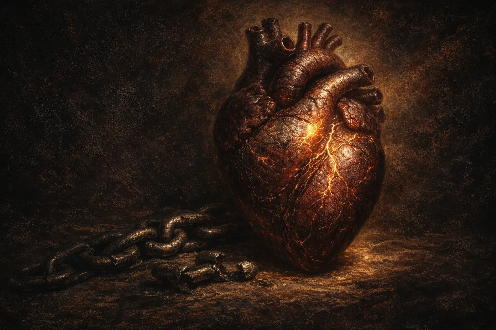
Вот оно, возрождённое сердце. Израненное, но живое. Несущее на себе и старые отметины, и свежие шрамы — потому что грех резал его и тогда, когда оно молчало и не сопротивлялось, и теперь, когда оно сопротивляется каждый день. Разница не в том, что резьба прекратилась, а в том, кто теперь держит ответ: сердце больше не сдаётся без боя. Многие старые борозды зарастают — медленно, неровно, с болью; но новые раны это уже не клеймо раба, а след поединка. Ещё не достигшее безгрешности, но навсегда порвавшее с рабством. Оно пульсирует новой жизнью, но хранит смиряющую память о том времени, когда было глухим камнем и не чувствовало резца. Оно ежедневно предаёт свой грех смерти, черпая силу в любви Спасителя.
Это сердце в пути: уже искупленное, уже исписанное почерком Самого Бога — и ещё не достигшее того берега, где не будет ни боли от рубцов, ни борьбы, ни слёз.
Проверь себя
Заключение
Иеремия 17 не разрешает нам быть поверхностными. Он говорит: грех — это не просто пятно, а резьба; сердце — не просто чувствительный центр, а лабиринт самообмана; религия сама по себе не спасает, если жертвенник уже несёт на себе следы сердца.
Но та же книга Иеремии не разрешает и отчаяния: Бог не только разоблачает надпись греха — Он обещает Своё собственное письмо в сердце. И Послание к Евреям свидетельствует: это обещание исполнено.
Поэтому христианину нельзя ни доверять себе наивно, ни презирать себя безнадёжно. Его путь — более узкий и более славный:
- смиряться, потому что сердце умеет лгать;
- бодрствовать, потому что плоть ещё сопротивляется;
- умерщвлять грех, потому что новая жизнь уже дана;
- надеяться, потому что Бог уже начал в нём то, что доведёт до конца.
«Я не понимаю, как человек может быть истинно верующим, если грех не является для него величайшим бременем, скорбью и мукой» — пишет Оуэн.26Owen J. Of Indwelling Sin in Believers («О грехе, живущем в верующих»). Works Vol. 6. Banner of Truth, 1965 И тут же — обратная сторона той же монеты: сам факт, что грех стал мукой, уже говорит о благодати: камень не страдает от собственной каменности.
Бог разверз бездну не затем, чтобы мы в ней погибли, — а затем, чтобы мы наконец увидели, как глубоко должен был сойти Христос, чтобы нас достать.
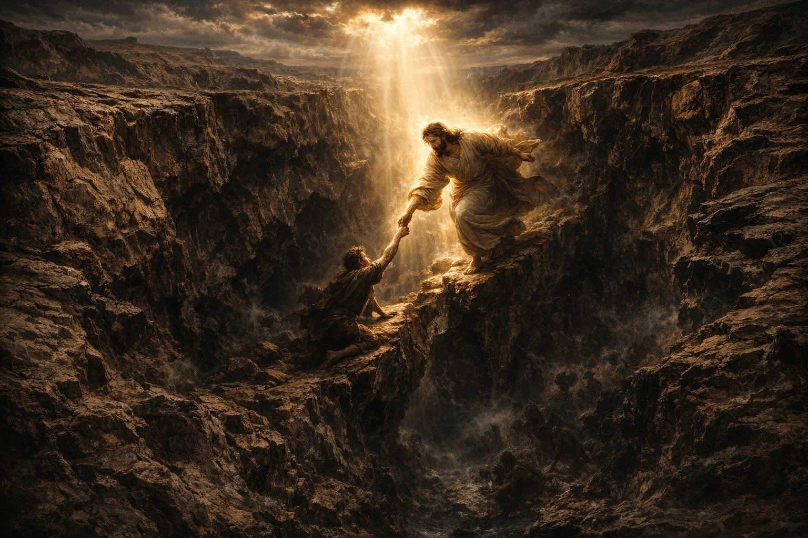
Рекомендуемая литература
Книги, на которые опирается эта статья — и те, что позволяют идти глубже по каждой из её тем.
Комментарии на Иеремию
- The Book of Jeremiah («Книга пророка Иеремии»). NICOT. Eerdmans, 1980. — Подробный евангельский экзегетический комментарий; широко используется в консервативных семинариях как надёжный академический ориентир.
- The Message of Jeremiah («Весть пророка Иеремии»). BST. IVP, 2014. — Сочетание экзегезы и пастырского применения.
- Commentary on Jeremiah and Lamentations («Комментарий на Иеремию и Плач Иеремии»). 5 vols. Calvin Translation Society, 1850–1855. — Богословская проницательность, незаменимая для понимания главы 17.
Сердце, грех и умерщвление: пуританская классика
- Of the Mortification of Sin in Believers («Умерщвление греха в верующих»). Works, Vol. 6. Banner of Truth, 1965. — Главная книга по теме ежедневной внутренней войны. Есть русский перевод: М.: ЭПОС, 2006.
- Of Indwelling Sin in Believers («О грехе, живущем в верующих»). Works, Vol. 6. Banner of Truth, 1965. — Анатомия остаточного греха: что именно умерщвляется.
- Keeping the Heart («Хранение сердца»; оригинальное название — A Saint Indeed). Monergism Books, 2021. — Классика о сердце как центре личности и его хранении.
- Human Nature in its Fourfold State («Природа человека в её четырёх состояниях»). Banner of Truth, 2020. — Невинность, падение, благодать, слава: системный взгляд на природу сердца. Есть русский перевод: Братство независимых церквей ЕХБ, 2003.
- The Doctrine of Repentance («Учение о покаянии»). Banner of Truth, 1987. — О различии сокрушения о последствиях и подлинного покаяния.
- The Heart of Christ in Heaven towards Sinners on Earth («Сердце Христа на небесах к грешникам на земле»). Banner of Truth, 2011. — Поворот взгляда от собственного сердца к сердцу Христа.
- Precious Remedies Against Satan's Devices («Драгоценные средства против уловок сатаны»). Banner of Truth, 1984. — Духовная война, уловки и самообман сердца.
- A Treatise Concerning Religious Affections («Религиозные чувства»). Banner of Truth, 1986. — Самый глубокий разбор вопроса: как отличить истинное обновление сердца от ложного. Есть русский перевод: Come Over And Help, 2008.
Систематическое богословие: грех, освящение, остаточная порча
- Redemption Accomplished and Applied («Искупление, совершённое и применённое»). Eerdmans, 1955. — Ясный реформатский каркас: возрождение, освящение, союз со Христом.
- Reformed Dogmatics («Реформатская догматика»). Vol. 3: Sin and Salvation in Christ («Грех и спасение во Христе»). Baker Academic, 2006. — Лучший реформатский разбор природы греха и нового творения. Есть русский перевод (тт. 1–3, электронное издание).
- Systematic Theology («Систематическое богословие»). Eerdmans, 1939. — Надёжный однотомный ориентир по греху, плоти, возрождению и остаточной порче. Есть русский перевод: СПб.: Библия для всех, 2000.
- Systematic Theology («Систематическое богословие»). Vol. III. Eerdmans, 1975. — Раздел об освящении и Рим. 7; чёткое разграничение моральной реформы и сверхъестественного освящения.
- Saved by Grace («Спасение по благодати»). Eerdmans, 1989. — Сотериология как процесс: «уже» и «ещё не» в применении спасения. Есть русский перевод (электронное издание).
Римлянам 7–8
На русском языке
- Умерщвление греха в верующих. М.: ЭПОС, 2006.
- Систематическое богословие. СПб.: Библия для всех, 2000.
- Реформатская догматика. Тт. 1–3. (электронное издание)
- Спасение по благодати. (электронное издание)
- Тайна Провидения; Действие благодати. (электронное издание)
- Природа человека в её четырёх состояниях. Братство независимых церквей ЕХБ, 2003.
- Религиозные чувства. Come Over And Help, 2008.
- Наставление в христианской вере. 4 тт. М.: РГГУ, 1997–1998. — Кн. II.3 (тотальная испорченность), Кн. III.3 (умерщвление).